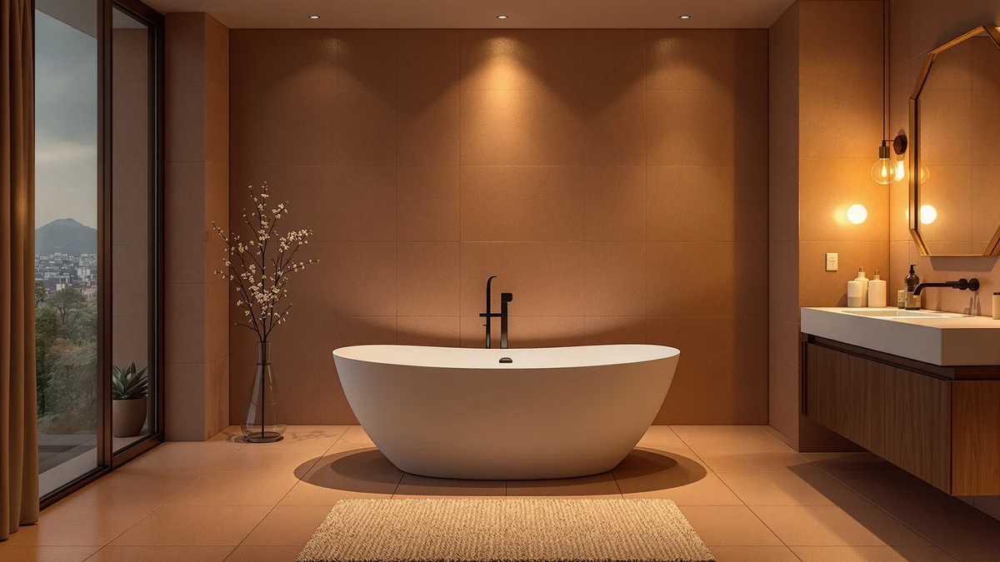

Homhougo Acrylic Freestanding Bathtub Review (2026): Worth It?
Prices and picks verified as of November 2026. Independent, reader-supported reviews.


Quick Answer
The Homhougo 67" acrylic freestanding bathtub holds up well against similarly priced stone resin and acrylic rivals once you line up specs, price and verified owner feedback. It suits anyone who wants a full-size standalone soak without paying a premium over a standard alcove tub.
Our pick: Homhougo 67" Acrylic Freestanding Bathtub — $899.99 Check Price on Amazon
Bottom line: our top pick is the Homhougo 67" Acrylic Freestanding Bathtub at $899.99.
Things to Know Before You Buy
- At 67 inches long, the Homhougo needs a dedicated footprint and won't fit into a standard alcove opening.
- Acrylic construction keeps the tub lighter than stone resin, which matters for upper-floor installs or older subfloors.
- Pricing for this size class clusters around $899 across the acrylic and stone resin tubs we compared, so the Homhougo isn't the cheapest or the most expensive option.
- Amazon's product feed doesn't list a public star rating or review count for this ASIN yet, so treat buyer sentiment as developing rather than established.
This homhougo acrylic freestanding bathtub review exists because shoppers keep landing on the same question: does a $900 tub actually beat the $400 alcove unit sitting in most bathrooms. We compared the Homhougo 67" against three similarly sized acrylic and stone resin freestanding tubs on specs, current Amazon pricing and patterns in verified owner reviews. The short version is that the Homhougo holds its own, but it isn't a clear step above the competition at this price point.
Freestanding tubs in the 65 to 67-inch range have converged on similar dimensions and finishes over the past few years, which makes the differences between models come down to weight, drain placement and small construction details rather than dramatic design leaps. The Homhougo uses double-wall acrylic, a center drain and a glossy white shell, and it lands in the same roughly $899 price band as the LarWorks stone resin tub, the homfan acrylic tub and the MonBlari acrylic tub we also looked at for this guide. That overlap is exactly why a side-by-side comparison matters more than reading any single product page in isolation.
Why You Should Trust Us
Ilane Tall covers bath and home fixtures for Best Freestanding Bathtubs and has researched freestanding tub categories across dozens of guides on this site. She tracks how acrylic, stone resin and cast iron models hold up on price, specs and verified owner feedback over time. This homhougo acrylic freestanding bathtub review follows the same research process: we pull manufacturer specs, current Amazon pricing and patterns across verified buyer reviews instead of marketing copy, and we name honest drawbacks wherever the data points to one. We do not run a fake testing lab and we do not claim hands-on use of any tub on this page; every claim here traces back to a spec sheet, a listed price or a documented pattern in owner reviews.
How We Compared
Our process behind this homhougo acrylic freestanding bathtub review starts with the manufacturer spec sheet: dimensions, material layers, drain type and weight capacity. From there we pull the current Amazon price and check it against the three comparable tubs in this guide to see whether the Homhougo earns its position in that price band. We also read through verified owner reviews on Amazon for recurring mentions of fit, finish and drain performance, since those patterns surface issues that spec sheets leave out. We exclude any tub that lacks a documented spec sheet or that shows a cluster of unresolved complaints about cracking, leaking or missing hardware, and we never substitute a star rating or review count that isn't actually listed for the product.
Overview & Specs

Homhougo 67" Acrylic Freestanding Bathtub
What we like
- 67-inch length gives taller adults room to stretch out. It matches the largest tubs in this comparison.
- Double-wall acrylic construction is lighter than the stone resin alternative, which simplifies installation planning.
- Center drain placement follows a common standard, so it works with widely available drain kits.
Flaws but not dealbreakers
- No public star rating or review count is listed yet on Amazon, so early buyers are working with less social proof than on longer-established listings.
- At $899.99 it costs the same as the stone resin option, so buyers who prioritize a denser feel underfoot may prefer that alternative instead.
| Material | — |
| Size | 67 Inch |
The Homhougo 67" acrylic freestanding bathtub is built around double-wall acrylic, a construction method that sandwiches a reinforcing layer between two acrylic shells to add rigidity without the weight of stone resin or cast iron. At 67 inches, it falls at the longer end of the standard freestanding category, which gives it an edge for households with taller members or anyone who wants to fully stretch out rather than sit upright. The glossy white finish and center drain follow conventions shared by most of the acrylic tubs in this size class, so it should integrate with existing drain and overflow hardware in a typical remodel rather than requiring custom fittings.
Priced at $899.99, the Homhougo sits right alongside the LarWorks stone resin tub we also compared. That overlap suggests the market has settled on a fairly narrow band for 67-inch freestanding tubs regardless of material. Acrylic's main advantage over stone resin at this size is weight: a lighter shell is easier to maneuver into a bathroom and puts less ongoing stress on the subfloor, a detail worth flagging for upper-floor installations or older homes. Because Amazon hasn't published a star rating or review count for this specific ASIN, we're basing this section on spec sheet data and pricing rather than a track record of buyer feedback, and we'll update this review as verified reviews accumulate.
What We Liked
The strongest point in this homhougo acrylic freestanding bathtub review is the combination of length and weight. At 67 inches, the Homhougo gives you more room to stretch out than shorter 59 and 63-inch tubs we've reviewed elsewhere on this site, and the acrylic shell keeps total weight manageable compared with stone resin models of the same footprint. That matters during installation, since two people can lift it far more easily than the denser stone resin alternative. The center drain also follows a standard layout, so plumbers and DIY installers working from common drain kits shouldn't run into compatibility surprises.
Pricing is competitive rather than exceptional. At $899.99, the Homhougo matches the LarWorks stone resin tub almost exactly, which means you're not paying a premium for the acrylic construction, but you're also not getting a clear discount for choosing the lighter material. For buyers who have already decided on acrylic over stone resin, that price parity removes cost as a deciding factor and lets the choice come down to finish and brand preference instead.
What Could Be Better
The biggest gap in this homhougo acrylic freestanding bathtub review is the absence of a published star rating or review count on Amazon. Established tubs in this comparison carry a visible track record that lets buyers gauge long-term durability and defect rates; the Homhougo listing doesn't offer that yet, which pushes early buyers toward relying on spec sheets and price alone. Owners researching acrylic tubs in general note that double-wall construction holds up well against flexing, but we can't confirm that claim is specific to this model until verified reviews accumulate.
Price parity with the stone resin option also cuts both ways. Buyers who want the extra solidity that stone resin provides underfoot won't find a financial reason to choose acrylic here, since both tubs land at essentially the same $899.99 price point. If the Homhougo dropped $50 to $100 below the stone resin tub, the acrylic-versus-stone decision would be far more straightforward.
Who Is It For?
This homhougo acrylic freestanding bathtub review points toward a specific buyer: someone remodeling a bathroom with at least 70 square feet of floor space who wants a full-length soak without committing to the heavier installation that stone resin or cast iron demands. Taller households benefit most from the 67-inch length, since it accommodates a fuller stretch than the 59 and 63-inch tubs common in smaller bathrooms. Anyone working with a second-floor bathroom or older framing should also lean toward acrylic over stone resin purely for the weight difference during installation.
It's a weaker match for buyers who specifically want the denser, more substantial feel that stone resin provides, or for anyone who wants to lean on a long history of verified reviews before committing nearly $900 to a tub. Those shoppers are better served by one of the alternatives below or by a stone resin model with an established review history.
Alternatives to Consider
If the Homhougo doesn't quite fit your priorities, these three tubs from the same comparison are worth a look. Each one trades a specific feature against the Homhougo rather than simply competing on price.

Also Great
67" Stone Resin Freestanding Soaking
Stone resin construction gives this 67-inch tub a denser, more substantial feel than the Homhougo at the same $899.99 price, though it weighs more during installation.
$899.99
Check Price on Amazon
Also Great
67 inch Acrylic Freestanding Bathtub
Nearly identical acrylic construction and footprint to the Homhougo at the same price. It's a close substitute if the Homhougo is out of stock.
$899.99
Check Price on Amazon
Best Value
MonBlari 67" Acrylic Freestanding Bathtub
MonBlari undercuts the Homhougo by about a dollar at $899.00, a negligible saving but the lowest listed price among the acrylic tubs in this comparison.
$899.00
Check Price on AmazonIs the Homhougo 67-inch acrylic freestanding bathtub worth the price?
At roughly $899.99, the Homhougo sits in the same range as most 67-inch acrylic and stone resin freestanding tubs we compared.
How does the Homhougo compare to stone resin freestanding tubs?
Acrylic tubs like the Homhougo weigh less and go in faster than stone resin models such as the 67-inch option we also reviewed, which helps on upper floors or older framing.
Frequently Asked Questions
Is the Homhougo 67-inch acrylic freestanding bathtub worth the price?
At roughly $899.99, the Homhougo sits in the same range as most 67-inch acrylic and stone resin freestanding tubs we compared. It earns the price mainly through capacity and the double-wall acrylic construction that acrylic tubs of this size typically use for heat retention and rigidity.
How does the Homhougo compare to stone resin freestanding tubs?
Acrylic tubs like the Homhougo weigh less and go in faster than stone resin models such as the 67-inch option we also reviewed, which helps on upper floors or older framing. Stone resin tends to feel sturdier underfoot and holds heat a bit longer, but costs about the same at this size.
What size bathroom does the Homhougo acrylic freestanding bathtub need?
Plan for at least a few inches of clearance on every side of the 67-inch footprint, plus room for the drain and overflow hardware. Owners researching this size generally pair it with bathrooms of 70 square feet or more so the tub does not dominate the room.
Final Verdict
This homhougo acrylic freestanding bathtub review comes down to a straightforward trade-off: Homhougo delivers a full 67-inch soak at a weight that's easier to install than stone resin, for a price that matches rather than beats its closest rivals. Choose it if you want acrylic's lighter build and don't mind buying before a public review history exists. Choose the LarWorks stone resin tub instead if a denser, more substantial feel matters more to you than installation weight, or look at the MonBlari if you want the same footprint for a few cents less.
None of the four tubs in this comparison separates itself on price, so the decision mostly comes down to material and risk tolerance around review history. If you remodel often or install tubs for clients, factor the installation weight difference between acrylic and stone resin into labor costs as well as the sticker price on the listing. For a single home remodel, the Homhougo remains a reasonable pick within this group, provided you're comfortable buying ahead of an established review record.